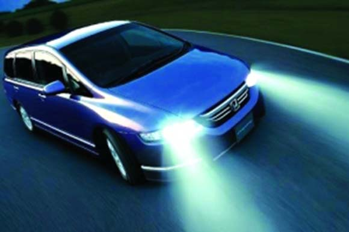

2015年新交规科目三（大路考）考试由原来的13项道路驾驶技能项目增加到16项，并且考试里程不少于3公里，其中需抽取不少于20%进行夜间考试；不进行夜间考试的考生，应当进行模拟夜间灯光使用考试。
考试项目：上车准备、起步、直线行驶、加减挡位操作、变更车道、靠边停车、直行通过路口、路口左转弯、路口右转弯、通过人行横道线、通过学校区域、通过公共汽车站、会车、超车、掉头、夜间行驶，共16项！
1上车准备：上车之前需绕车一周，对车辆外观及周围的环境进行正确观察，确认安全。特别是在打开车门之前应观察后方的交通情况，以防后方有车或行人路过。这个习惯在以后开车过程中也会用到！大家千万不要忽视这个细节，很重要的哦。
2起步：上车准备之后，拉开车门上车起步，起步前检查车门是否完全关闭，调整座椅、后视镜，系好安全带，检查驻车制动器、挡位，启动发动机。检查仪表，观察内、外后视镜，侧头观察后方交通情况，开启转向灯，挂挡，松驻车制动，起步。起步过程平稳、无闯动、无后溜，不熄火。建议起步时右脚踩刹车，以坡道起步标准起步，防止路面不稳导致起步熄火。
3直线行驶：根据道路情况合理控制车速，正确使用挡位，保持直线行驶，跟车距离适当，行驶过程中适时观察内、外后视镜，视线不得离开行驶方向超过2秒。大家切记看的远才能跑的直，如果眼睛只看车前最终不能行驶直线是肯定的。
4加减档位操作：根据路况和车速，合理加减挡，换挡及时、平顺。加减挡的时候一定要左手握紧方向盘，不然在加减挡的时候会出现跑方向的情况。操作过程：踩油门[转速1500转（15迈）时]→踩离合、松油门→换二档→松离合、踩油门[当转速1500或25迈时]→踩离合、松油门→换三档→快松离合（不踩油门）→[无需加油]踩离合→换四档→快松离合、踩离合→换三档→松离合→[把速度降到20迈]踩离合→换2档→慢松离合。
5变更车道：变更车道前，观察与判断车辆后方、侧方和准备变更的车道上的交通流情况，确认安全后，打开转向指示灯示意，再次通过后视镜观察两侧道路上有无车辆超越，确认准备驶入的车道是否允许留有安全距离。在不妨碍该车道内车辆正常行驶的情况下，平稳转向驶入所需车道后，关闭转向指示灯。
6靠边停车：听到考官的“靠边停车”的指令后，开右转向灯，看右侧反光镜，观察情况；适量踩下制动踏板；向右转动方向盘（第一把轮向右靠边）；在车速降低至低于一档的时速时踩下离合器踏板，当右前轮靠近路沿时，再向左转方向（第二把轮，调正车辆并且调整车身与路沿的距离）；向左回转方向（第三把轮，车正轮正）迅速停车。在车辆近停时，稍许抬起制动踏板减缓刹车惯性，平稳停车；拉紧手刹车，挂空档，抬离合器抬刹车踏板，关闭转向灯。整个靠边停车动作完成。
7直行通过路口、路口左转弯、路口右转弯：需合理的观察四周交通情况，减速或停车观察，根据车辆行驶方向选择相关的车道行驶，正确使用转向灯，根据不同路口采取正确的操作方法，安全通过路口。路口左转弯和路口右转弯的时候重要的是观察两侧环境并减速行驶，不然会有甩车的现象出现。
8通过人行横道线：在通过人行横道的时候首先减速，观察两侧的交通情况，确认安全以后，合理控制车速通过，遇到行人需停车让行。在此过程中需注意档位，如果减速不及时减档会出现脱档现象。
9通过学校区域：动作要领是提前减速至30km/h以下，注意观察情况，文明礼让，确保安全通过，遇有学生和行人横过马路的时候应该停车让行。，不得鸣喇叭或与学生抢行。
考试扣分基础点:
1、不观察左、右方交通情况，不合格;
2、不按规定减速慢行，不合格;
3、遇行人通过人行横道不停车让行，不合格。
10通过公共汽车站：提前减速慢性，观察公共汽车进、出站动态和乘客上下车动态情况，着重注意同向公共汽车前方或对向公共汽车后方有无行人横穿道路。需要保持较大的安全间距进行超越，并随时做好停车避让的准备。
考试扣分基础点:
1、不观察左、右方交通情况 不及格
2、不按规定减速慢行 不及格
11会车：正确判断会车的地点，前方道路的宽度、坚实情况，路旁行人、车辆情况，路旁停车以及障碍物情况等。会车有危险的时候，控制车速，提前避让，调整会车地点，会车时与对方车辆保持安全间距。在会车时候要注意的细节：会车中不使用紧急制动、猛抬油门、猛打方向盘；不要在有障碍物、窄桥、窄路、隧道、急转弯等复杂地段会车；夜间会车需关闭远光灯。特别注意的事如果有会车让行标志，面对标志的车辆在会车需停车让行。
考试扣分基础点:
1、会车前不使用转向灯扣20分
2、会车前，开转向灯少于3秒即转向扣10分
3、在没有中心隔离设施或者中心线的道路上会车时，不减速靠右行驶，并与其他车辆、行人或者非机动车未保持安全距离不及格
4、会车困难时不让行不及格
5、横向安全间距判断差，紧急转向避让相对方向来车不及格
6、在规定的时间、路程内，未按语音指令会车不及格
12超车：超车之前，需要保持与被超越车辆的安全距离。观察车辆左侧交通情况,开启左转向灯，选择合理时机，鸣喇叭或交替使用远近光灯，从被超越车辆的左侧超越。切记是从左侧超车哦，超车的时候，侧头观察右侧被超越车辆的动态，保持横向的安全距离。超越之后，在不影响被超越车辆正常行驶的情况下，开启右转向灯，逐渐驶回原车道，关闭转向灯。
在超车队的时候，加速连续超越。若对面道路不能保证安全的横向间距，应及时开右转向灯，见机插入车队，待对面车过后再超越车队。不要在交叉路口、弯道、坡顶、岔路口、会车、被超车辆正在超车的时候超车。
13掉头：掉头之前开启左转向灯、减速，注意观察路况，同时密切注意来往车辆情况(特别是车速快的车辆)，必要时停车等待。掉头行驶只要控制速度，只要速度控制好基本没问题。
14夜间行驶：起步之前开启前照灯。行驶过程中正确使用灯光。无照明、照明不良的道路使用远光灯;照明情况好的道路、会车、路口转弯、近距离跟车的时候使用近光灯。在超车和通过急弯、坡路、拱桥、人行横道或没有交通信号灯控制路口的时候，应交替使用远近光灯示意。夜考重点就在于灯光的使用。
考试扣分基础点：
1、不能正确开启灯光，不合格。
2、同方向近距离跟车行驶时，使用远光灯，不合格。
3、通过急弯、坡路、拱桥、人行横道或者没有交通信号灯控制的路口时，不交替使用远、近光灯示意，不合格。
4、会车时不按规定使用灯光，不合格。
5、在路口转弯时，使用远光灯，不合格。
6、超车时未变换使用远、近光灯提醒被超越车辆，不合格。
7、对低能见度道路情况判断差，不合格。
8、在有路灯、照明良好的道路上行驶时，使用远光灯，不合格。

1考试时候时刻观察周边情况，安全行驶是关键。听从指令，在做项目之前正常是减速慢行！
2一个良好的心态是考试的关键，而且这些考试项目在后期行车中也会经常用到，多练习并养成好习惯很重要。